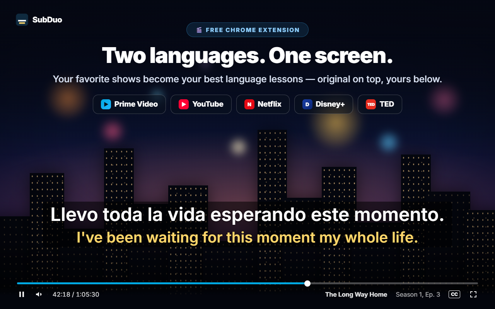
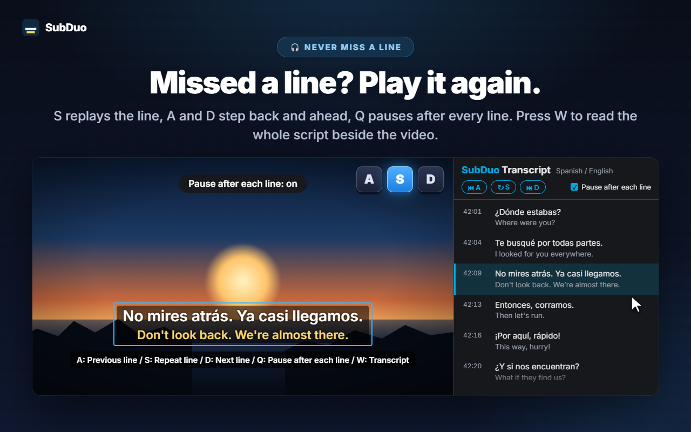
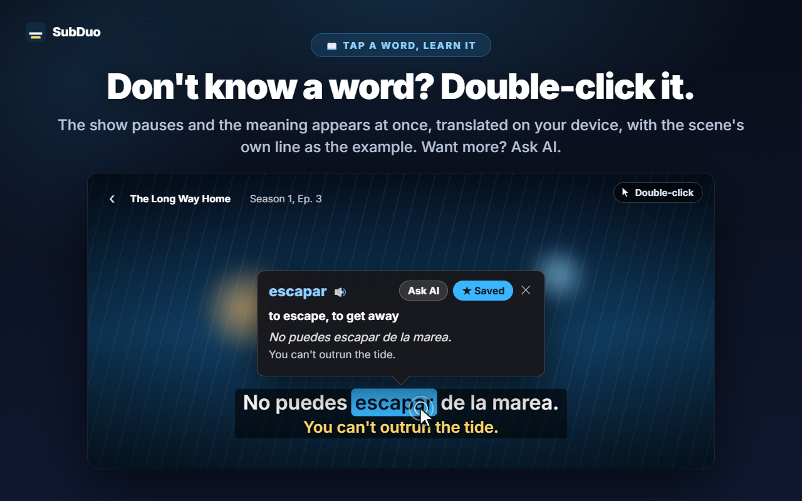
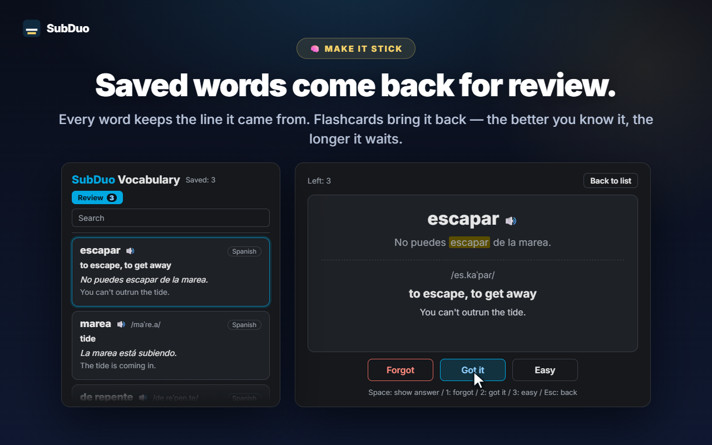

Any two subtitle languages
Every track the site provides is detected when the video plays, including YouTube's auto-generated subtitles. Choose one per line, or hide one line.
SubDuo shows two subtitle languages at once — the original on top, your language below. Double-click a word to see what it means, replay a line with one key, and keep what you learn in a built-in vocabulary list.
Uses the subtitles each site already provides · No account · Subtitles stay in your browser
Streaming players show one subtitle language at a time. SubDuo adds a second one — and the tools to learn from it.
Screens from the extension, shown in your language.

Pick any two of the subtitle tracks the title offers — the original on top, your language below. Drag the subtitles anywhere, scroll over a line to resize it, and right-click to change colors, transparency or blur.

Press S to repeat the line, A and D to step back and ahead, and Q to pause automatically after each line. Press W to open the transcript in Chrome's side panel — both languages, line by line — and click any row to jump there.

The video pauses and a card shows the meaning at once, translated on your device by Chrome's built-in translator, with the scene's own line as the example. Alt+drag selects a phrase. Tap “Ask AI” for the meaning in context, the pronunciation and an example sentence.

Every saved word keeps the line it came from. Search and filter your vocabulary list, play the pronunciation, and review with flashcards — the better you know a word, the longer it waits before coming back.
No account, no setup screens. Install it and press play.
Install SubDuo from the Chrome Web Store, then play a video on Prime Video, YouTube, Netflix, Disney+ or TED.
Click the SubDuo icon and choose one subtitle language for the top line and one for the bottom. Only tracks the title offers are listed.
Double-click words to look them up, press A, S or D to replay lines, and open your vocabulary list from the popup.
Built for people who learn by watching — and want the subtitles out of the way until they need them.
Every track the site provides is detected when the video plays, including YouTube's auto-generated subtitles. Choose one per line, or hide one line.
Double-click or Alt+click a word, or Alt+drag a phrase. Playback pauses and the translation appears on the video, done on your device.
The meaning in context, the pronunciation and an example sentence, in your display language. Up to 20 explanations a day, free.
Save words with one click, search them, filter by language and hear them with 🔊. Flashcards space out the words you already know.
A for the previous line, S to repeat, D for the next. Q pauses after every line. Blur one line to test yourself, then point at it to check.
Every line in both languages beside the video. The current line is highlighted; click any row to jump to it. Press W to open it.
Drag to move, scroll to resize a line, arrow keys to nudge, align left, center or right. Right-click for color, transparency and blur per line.
Large subtitles on YouTube, subtle ones on Netflix — settings are saved per site and synced through your Chrome.
Menus, translations and AI explanations use the display language you choose, which can differ from Chrome's language.
SubDuo reads the subtitle files each site already sends to your browser and draws them there. The only thing it sends out is a phrase you choose to ask AI about, together with its subtitle line.
Subtitles are parsed and drawn in your browser. Your settings, vocabulary list and viewing history are not sent to the developer. Word translations run on your device with Chrome's built-in translator.
When you tap “Ask AI”, the selected phrase, its subtitle line and the other line on screen, the language codes and a random device ID (for the daily limit) go to the SubDuo server, which asks OpenAI for the explanation. Your IP address is processed to run the service.
There is nothing to sign up for. The extension contains no advertising and no analytics.
“storage” for settings and vocabulary, “scripting” to reconnect open tabs after updates, “sidePanel” for the transcript, and access to the five supported sites only.
Installs from the Chrome Web Store in seconds